Resistor
Limits current and sets voltage dividers. Resistance is measured in ohms (Ω). On schematics you’ll often see values like 10k (10 kilo-ohms) with the unit left off.
This course covers the tools, common components, review process, and PCB conventions our team uses. You'll design a board, have it reviewed in stages, then assemble and test it once it's fabricated. If you go on to work on embedded software, this board becomes your platform for developing and testing firmware and sensors.
AI can be really helpful in explaining confusing topics, although personally I prefer video illustrations, which is why so many are linked here. When you turn to AI for help with a concept, it helps to say "explain in plain terms" to get a more intuitive explanation. For problems with KiCad or GitHub, AI can again be helpful in explaining what to do, but don't let Claude Code, Cursor or any other tool run CLI commands for you or interface with KiCad (they're also not very good at the latter yet). You need to learn these tools by heart and use them fluently without AI to pass technical interviews, do well at internships, and have a long-term position in this team.
Limits current and sets voltage dividers. Resistance is measured in ohms (Ω). On schematics you’ll often see values like 10k (10 kilo-ohms) with the unit left off.
Stores charge between two plates. Used for decoupling, filtering, and timing. Capacitance is measured in farads, and on boards you’ll mostly see µF, nF, or pF.
A voltage-controlled switch. A gate voltage turns the drain–source path on or off with almost no gate current. This is what this team primarily uses for load switching and drivers.
A coil that stores energy in a magnetic field and resists sudden current changes. Common in switching regulators, filters, and RF circuits.
Lets current flow mainly in one direction (anode → cathode). Used for polarity protection, rectification, and ESD clamps. LEDs are diodes that emit light.
Dive into what makes ICs the heart of modern technology. An integrated circuit is a tiny electronic device that combines multiple components, in various sizes, onto one chip for decision-making and signal-processing tasks.
You will hear both of these terms mentioned a lot when you work on PCBs. Passive components, such as resistors, capacitors and inductors, can’t amplify a signal or control current flow on their own. They store, release or dissipate energy and don’t need a separate power source to do their job. Active components, such as MOSFETs and ICs, need power to operate and can switch, amplify or otherwise control the flow of current and signals. Most circuits, including ours, combine both.
A schematic shows electrical connections, meaning which pins connect to which nets. It is a circuit document, not a picture of the finished board.
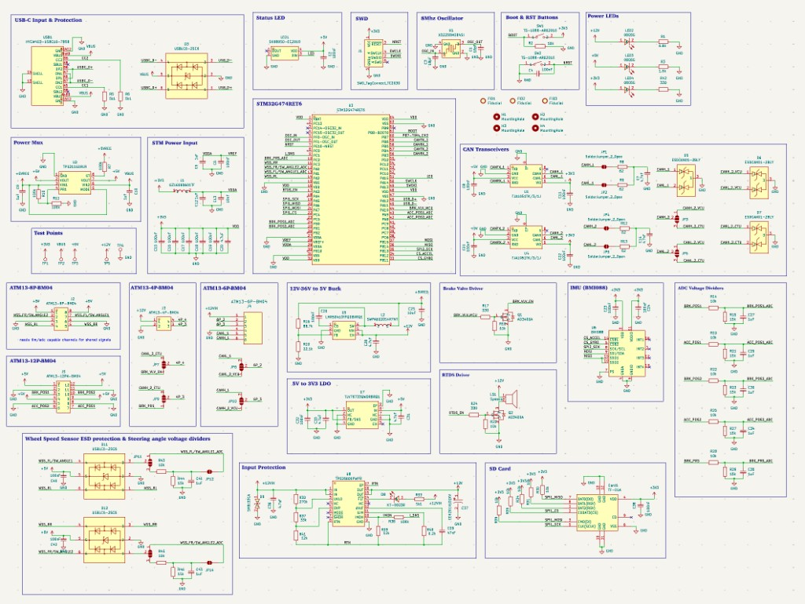
A net is a named electrical node. Every pin with the same net label is connected, even if no wire is drawn between them. Power symbols like 3V3 and GND are nets too.
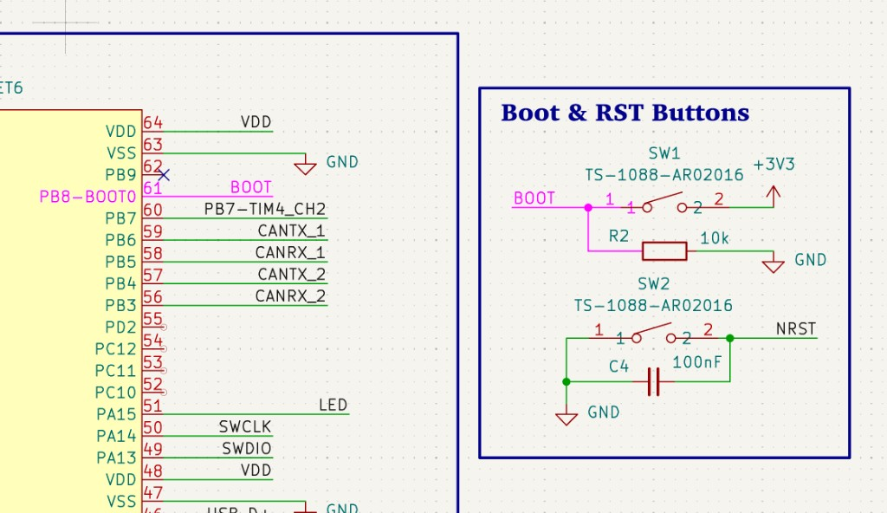
Placement is arranging footprints on the board outline (where each part sits) before the copper connections are drawn. In industry, “layout” often means the whole physical design; on this team we usually mean placement when we say the parts are laid out.
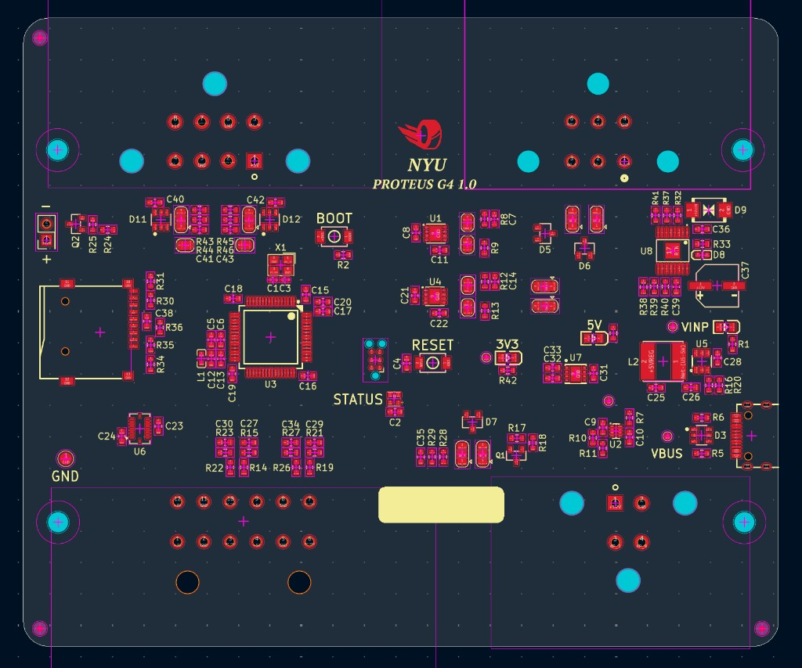
Routing is drawing the copper that connects those parts: traces on each layer and vias between layers. A fully routed board shows the electrical connections in copper, not just the footprints.
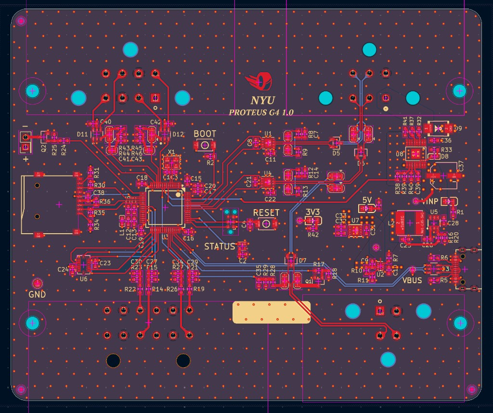
A symbol describes the function and pins of a part in the schematic. It does not define the physical pads. Symbols are numbered. Here R2 is a 10 kilo-ohm resistor. The unit is often left out, so you see 10k instead of 10 kΩ.
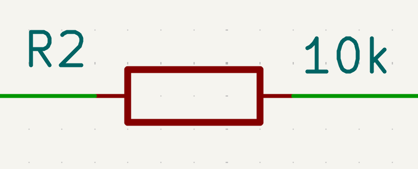
A footprint maps those pins to physical pads on the board. A correct symbol with a wrong footprint can ruin an otherwise good design.
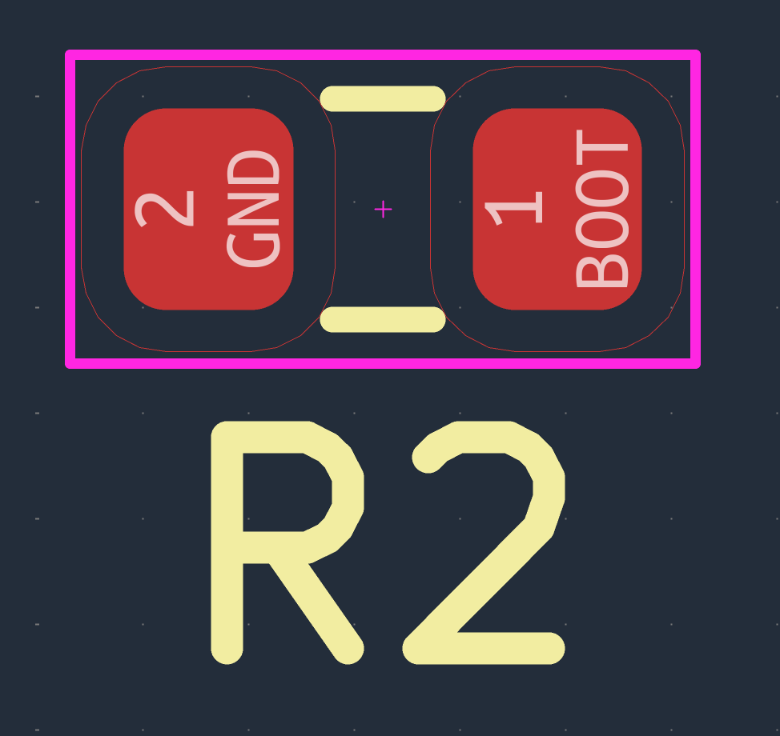
Surface-mount (SMD) parts sit on pads on the board surface and are soldered there, so they take no holes and can all go on one side. Through-hole (TH) parts have leads that go through plated holes and are soldered on the opposite side. Most parts on our boards are SMD; larger, mechanically stressed parts like connectors are often through-hole.
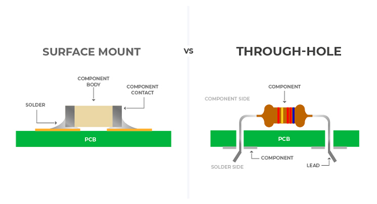
Traces are copper paths. A via is a plated hole connecting layers. Every via is a fabrication feature with clearance, drill and return-path implications.
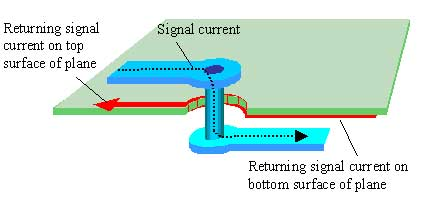
A stackup is the ordered list of copper and insulating layers in the board. More layers give room for solid power/ground planes and denser routing but cost more. Our team uses four layers: signal / GND / power / signal.
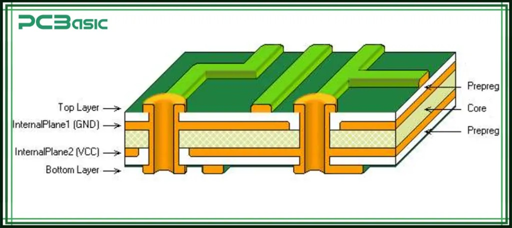
Local capacitors supply fast transient current to ICs. Place them close to each supply pin with short GND connections, not wherever there's room.
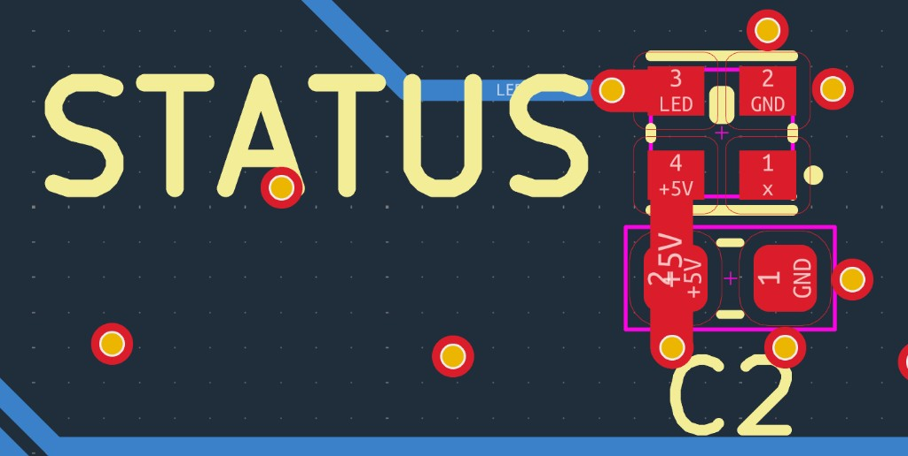
Current always has to come back to where it started. A signal goes out along the trace and returns through GND, usually right under the trace on the ground plane. A big loop acts like an antenna and picks up or radiates noise, so keep loops small and don't route over gaps in the plane.
This is why decoupling capacitors go right next to the power input pins: it keeps the ground loop between the cap and the IC as small as possible.
ERC (Electrical Rules Check) runs on the schematic: unconnected pins, missing power flags, conflicting drivers. DRC (Design Rules Check) runs on the PCB: clearances, unconnected copper, via and trace sizes. Neither one proves the circuit is correct.
Download and install KiCad from kicad.org, then watch DigiKey’s KiCad 9.0: Getting Started series in order and follow along. Seven short episodes take you from install through Gerbers and a BOM on a simple water-alarm board. You'll be installing KiCad 10, but its UI has minimal changes from KiCad 9, so the series still applies.
You'll be building a compact USB-powered STM32 board that has analog and digital signal inputs, CAN, microSD, status LEDs, programming/debug access, and test points. It shares many of the components and signal types we use in the other boards in the car.
Git & kicad-lib setupSchematicMentor reviewPlacementMentor reviewRoutingMentor reviewFinalize & fabTeam review
Agree with your mentor on a reasonable timeline and set dates for the three mentor reviews, so that you have the board ready for the team review on January 23rd. Obviously you're not expected to work during the holidays.
The board will have a USB-C connector to provide the board 5 V from a computer and USB 2.0 data for flashing firmware on the MCU. A standard practice is to also add an ESD protection diode.
USB supplies about 5 V, but the STM32 and most of the logic run at 3.3 V. A low-dropout regulator (LDO) steps 5 V down to 3.3 V so those parts get a stable supply.
Many sensors output an analog voltage. On our car, some examples are pedal position sensors, suspension angle sensors, steering angle sensors, and battery cell thermistors. An ADC converts that voltage into a digital value the MCU can use. A resistor divider scales the signal into a safe range for a 3.3 V ADC, and an RC filter smooths noise. Changing the resistor and capacitor values changes the frequency that gets filtered.
Optional:
An NTC thermistor is a resistor whose resistance drops as it gets hotter. With a 10 kΩ pull-up to 3.3 V it forms a voltage divider, and the ADC reads that voltage to work out the temperature. The battery module boards measure their cell temperatures with many of these, so this one lets you write and test that firmware on your own board.
Some sensors, like wheel-speed sensors, output pulses instead of a steady voltage. Timer input capture timestamps those edges so firmware can measure period, frequency, or pulse count.
CAN is the shared message bus that lets ECUs exchange data without a separate wire between every board. The STM32 has a CAN controller; an external transceiver converts the MCU’s TX/RX logic into differential CANH/CANL on the bus.
A microSD socket gives the board removable local storage over SPI, which is useful for logging when a network link isn’t available.
Simple rail LEDs show whether 5 V and 3.3 V are present. An addressable RGB LED, driven from a GPIO, shows MCU status such as boot, OK, or error.
BOOT0 and reset buttons, plus an SWD header, let you enter the bootloader, recover the MCU, and debug. Test points on the power rails make bring-up easier with a multimeter.
Send your GitHub username to your subteam lead. They'll send you an organization invite by email. Accept it. Then install Git and GitHub CLI (gh).
Install Homebrew following its official installer, then run:
brew install git gh
brew --version
git --version
gh --version
gh auth login
gh auth setup-gitChoose GitHub.com, HTTPS, and browser login. In case Terminal cannot find Homebrew after installation, follow the installer output to add brew to your shell PATH.
Install Git for Windows (includes Git Bash) and GitHub CLI for Windows. Open Git Bash and run:
git --version
gh --version
gh auth login
gh auth setup-gitUse Git Bash for the commands in this course. If gh is not recognized, restart Git Bash or use Windows Terminal / PowerShell, and verify the CLI installer PATH settings.
Make a private repository in your personal GitHub account, not in the NYU Formula SAE Electronics org, named FirstLast-Dev-PCB, replacing FirstLast with your first and last name run together. Keep it private. Then add your mentor and Veikko (GitHub username Veikkoish) as collaborators: on the repo page go to Settings → Collaborators → Add people. Create a FSAE folder on your Desktop and clone the library and your practice repo as siblings.
# macOS or Git Bash on Windows
mkdir -p ~/Desktop/FSAE
cd ~/Desktop/FSAE
git clone https://github.com/NYU-Formula-SAE-Electronics/fsae-kicad-lib.git
git clone https://github.com/YOUR-GITHUB-USERNAME/FirstLast-Dev-PCB.git
# browse an existing board for references and copying blocks
git clone https://github.com/NYU-Formula-SAE-Electronics/Proteus-PCB.gitReplace FirstLast and YOUR-GITHUB-USERNAME in the clone command. GitHub CLI alternative: gh repo create FirstLast-Dev-PCB --private --clone, while you're in the FSAE folder. If you use the CLI, add the collaborators afterwards on the repo's Settings page.
Copy the .gitignore file from Proteus-PCB into your own repo. It tells Git which temporary and backup files KiCad creates to leave out of your commits. The file name starts with a dot, so Finder hides it: use the terminal.
# macOS or Git Bash on Windows
cp ~/Desktop/FSAE/Proteus-PCB/.gitignore ~/Desktop/FSAE/FirstLast-Dev-PCB/.gitignoreReplace FirstLast as before. You'll commit it together with your first changes.
In KiCad's Preferences → Configure Paths, add an environment variable called FSAE_LIB and point it at the cloned fsae-kicad-lib folder. Use Preferences → Manage Symbol Libraries from the schematic editor, add ${FSAE_LIB}/fsae.kicad_sym as the project-specific symbol library named fsae. For footprints, use Preferences → Manage Footprint Libraries and add the matching .pretty folder.
In case you’re new to Git and GitHub: Git tracks changes on your computer. GitHub is the platform on which we store our repos in the cloud. On this team we keep version management simple: push often and ask for review after each gate. Exact setup commands are in the previous section.
Keep all team KiCad work as sibling folders under a single parent, usually Desktop/FSAE. The shared library and every board repo sit next to each other so paths stay consistent.
Copy a repo once with git clone. Edit the KiCad project on your machine. Before you start a session on a shared repo (especially the library), run git pull origin main so you have everyone else’s latest commits.
git add .
git commit -m "short description of what you did"
git push origin mainmainWe typically work directly on main because PCB files don’t merge the same way code files do. Git can’t cleanly combine two people editing the same schematic or layout. We sometimes still use branching for parallel work, but the merge has to be done manually in KiCad, not as an automatic Git merge.
When a review gate is ready, push to main, open the repo in the browser to confirm the files are there, then DM your mentor.
Title each block. Keep nets short and clear. Use labels instead of wires that snake across the page. Clean grouping matters.
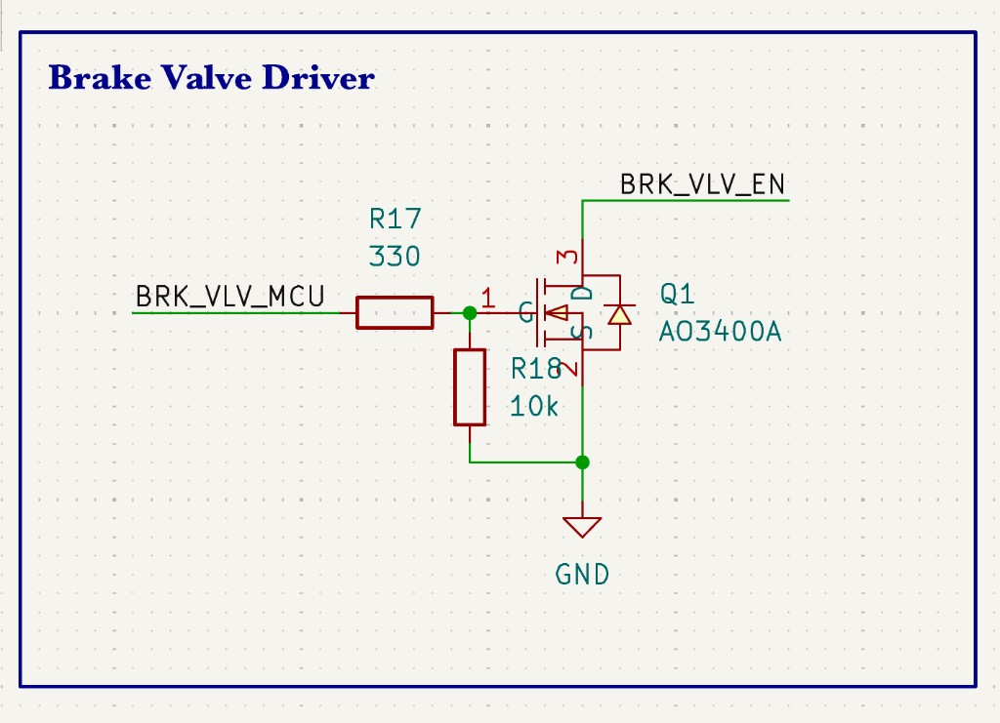
ICs, connectors, switches, and LEDs: the parts in the bill of materials, from fsae-kicad-lib. Passives: KiCad R and C_Small at values specified in the datasheet. Use footprint Resistor_SMD:R_0603_1608Metric for all resistors and Capacitor_SMD:C_0603_1608Metric for capacitors unless otherwise specified.
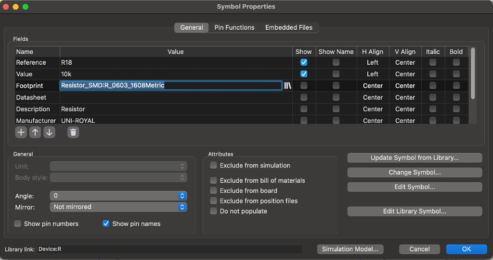
Always put power nets like +3V3 pointing up and GND symbols pointing down.
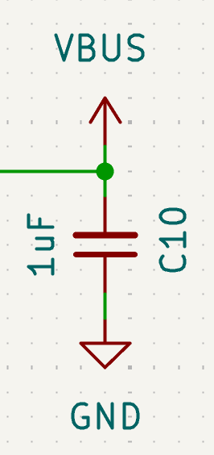
Name nets in one consistent style: uppercase with underscores and no spaces, and a name that says what the net does, like ADC4_SCALED. The same net keeps the same name in every block.
Annotate the schematic so every part gets a unique reference (R1, C1…) from the annotate tool, never typed by hand. Every resistor and capacitor shows its value, like 10k or 100nF.
Good practice, but not mandatory: put a no-connect flag (the X) on pins you deliberately leave unconnected, like the CAN transceiver S pin. It clears ERC warnings and shows the pin wasn't forgotten. Since we do placement before all the I/O is defined, unused MCU GPIOs can stay unflagged for now.
Lay out each block so signals flow left to right: inputs on the left, outputs on the right.
TYPE-C-31-M-12 from the fsae library (Place Symbol / Add Part).USBLC6-2SC6 from the fsae library. Wire USB D+/D− through it toward the MCU.CC1 and CC2 to GND so the board acts as a USB power sink.The Proteus reference on the right uses a waterproof USB-C for the car PCB. On this course board the connector is different: use TYPE-C-31-M-12.
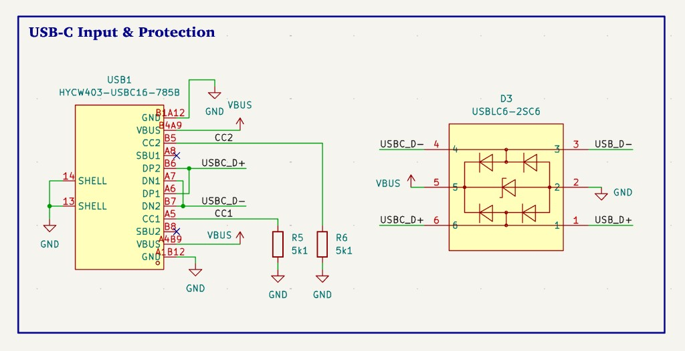
LD1117S33TR from the fsae library (Place Symbol / Add Part). This is a fixed 3.3 V variant.VBUS and +3V3 nets (and GND).Capacitor_SMD:C_0805_2012Metric.STM32F042C6T6 from the fsae library (Place Symbol / Add Part).+3V3, VDDA, VDD, GND, etc.).The Proteus reference on the right is organizational only. Capacitor values and filter parts differ because those boards use a different MCU.
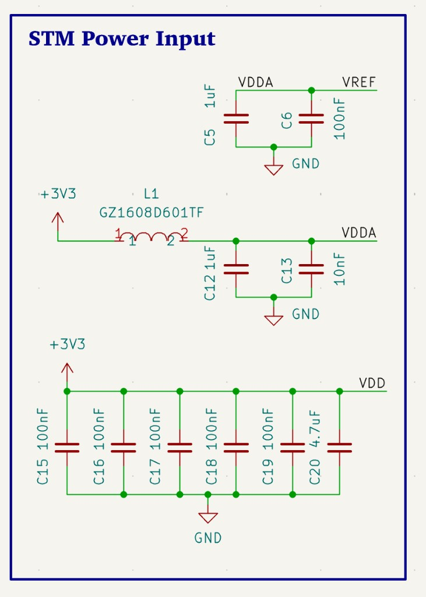
R / C_Small using the Dev-Test-PCB values: 10 kΩ series, 15 kΩ to GND, and 1 µF to GND on the scaled ADC node (divider + RC).ADC4 → ADC4_SCALED). Screw terminals come later.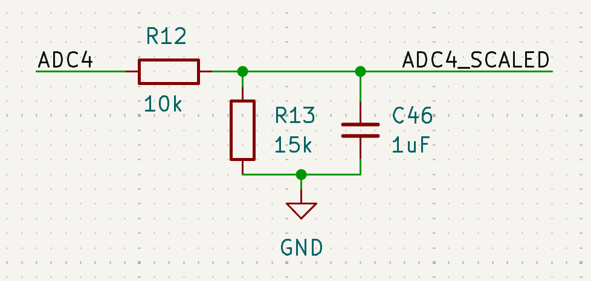
NCP21XV103J03RA (10 kΩ, 0805) from the fsae library. Connect one end to GND. The other end is the output node.R as the pull-up. Connect one pad to the output node and the other pad to +3V3.C_Small. Connect one pad to the output node and the other pad to GND.THERM on the output node and connect it to an ADC-capable pin on the STM32. You'll pick the exact pin when you assign the remaining GPIOs during placement.The thermistor's resistance drops as it heats up, so the voltage on THERM falls as the temperature rises. The battery module boards read their cell thermistors (Vishay NTCLE350E4) through the same 10 kΩ pull-up divider, and this part follows almost the same curve, so you can write and test the temperature firmware on this board.
TJA1051T_3_1J (TJA1051T/3/1J, SOIC-8) from the fsae library, not the HVSON TJA1051TK variant.VCC, VIO, TXD/RXD, CANH, and CANL. The S pin can be left unconnected.ESDCAN01-2BLY from the fsae library across CANH / CANL (and GND as the symbol requires) for bus ESD protection.2.54-1*2 from fsae; connect one pad to CANH and the other pad to a 120 Ω resistor whose far end goes to CANL.On car boards we often use split termination (two ~62 Ω resistors in series with a small capacitor from the midpoint to GND) to shunt common-mode noise. A single 120 Ω jumpered terminator is enough for this course board.
Proteus.kicad_sch, select the entire SD Card blue box, and copy with ⌘C / Ctrl+C.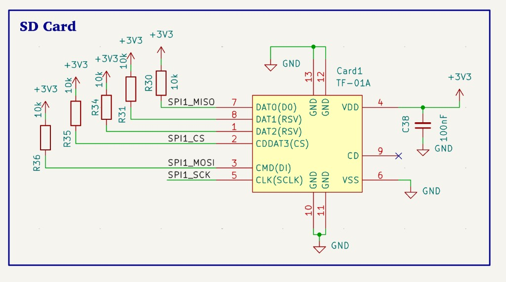
Proteus.kicad_sch, select the power LED block (5 V and 3.3 V 0805G LEDs with their series resistors), and paste with ⌘C / Ctrl+C then ⌘V / Ctrl+V. Rename the 5 V net to VBUS.+3V3, VBUS and GND test pads from Proteus as well. You don't need the +5V one.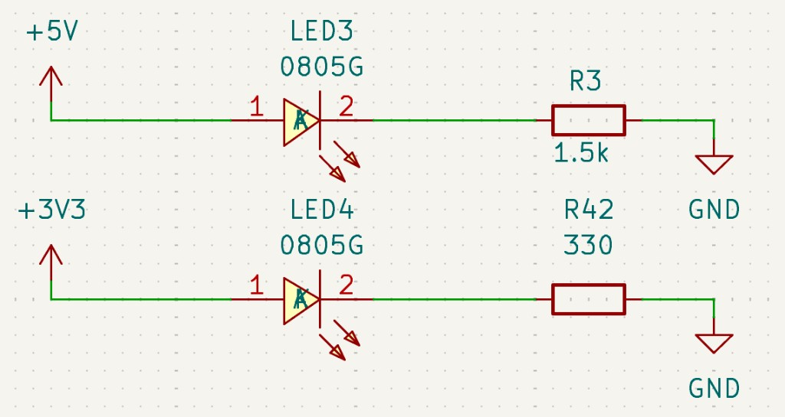
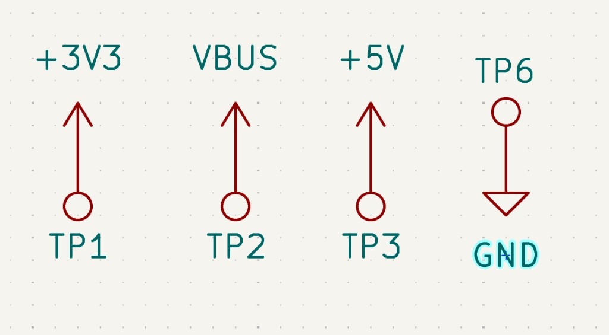
XL-3030RGBC-2812B from the fsae library.DIN pin. Put a no-connect flag on DOUT.C_Small from VDD to GND right next to the LED. Connect the capacitor to VBUS.WJ127-5.0-2P terminals from the fsae library.VBUS/GND, both ADC channels, both timer channels, and CANH/CANL.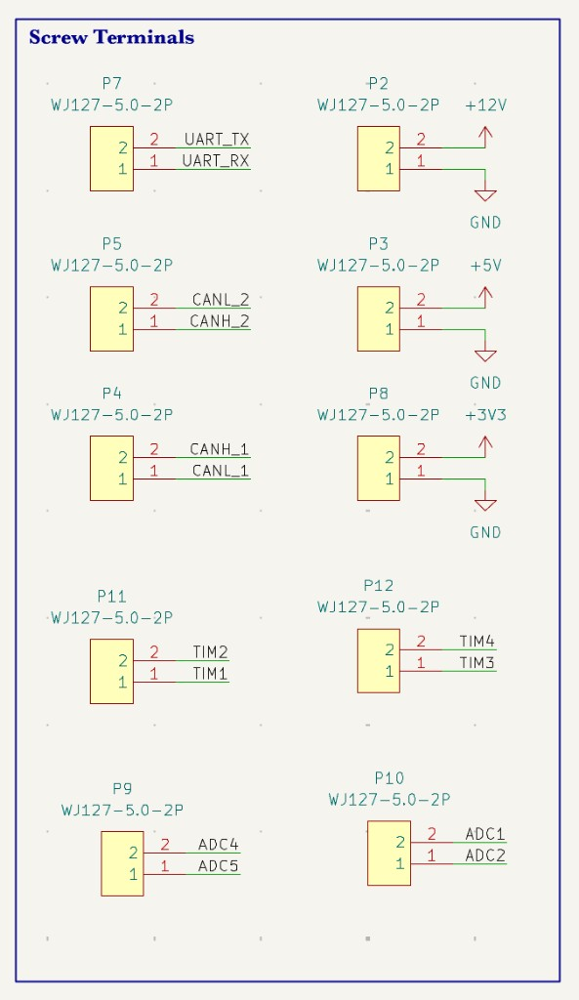
Proteus.kicad_sch, select the entire SWD blue box, and copy with ⌘C / Ctrl+C.+3V3, GND, NRST, SWCLK, and SWDIO match your MCU (leave SWO unconnected if the reference does).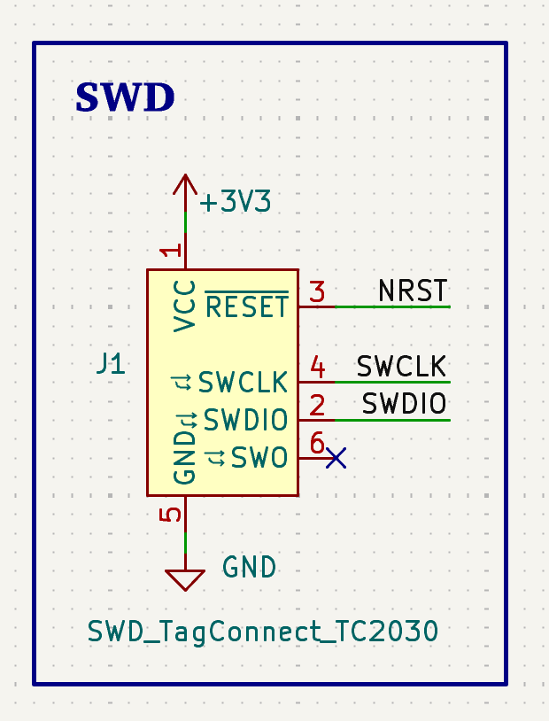
Proteus.kicad_sch, select the entire Boot & RST Buttons blue box, and copy with ⌘C / Ctrl+C.BOOT / NRST to the matching MCU pins (TS-1088-AR02016 is already in fsae).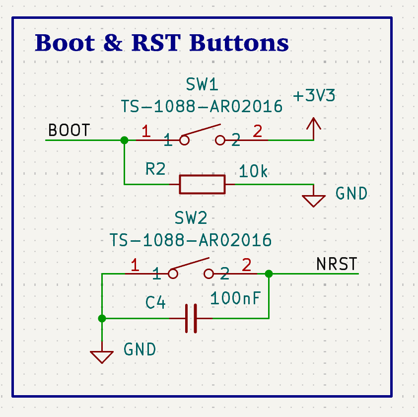
Once everything is added to the schematic, tick off each part as you confirm it is there. Resistors, capacitors and test points are not listed. The jumper shunt is not drawn in the schematic or on the PCB, only its header.
| In schematic | Block | Part / quantity | Purpose | Reference |
|---|---|---|---|---|
| MCU | 1× STM32F042C6T6 | Main microcontroller. Runs the firmware and talks USB, CAN, SPI and ADC. | LCSC C88447 ↗ | |
| CAN | 1× TJA1051T/3/1J | CAN transceiver. Converts the MCU’s CAN logic signals to the CANH/CANL bus levels. | LCSC C38695 ↗ | |
| CAN ESD | 1× ESDCAN01-2BLY | Protects the CANH/CANL lines from static discharge and voltage spikes. | LCSC C1976606 ↗ | |
| USB-C | 1× TYPE-C-31-M-12 | Connector for USB power and data from the computer. | LCSC C165948 ↗ | |
| USB ESD | 1× USBLC6-2SC6 | Protects the USB data lines from static discharge. | LCSC C7519 ↗ | |
| 3.3 V supply | 1× LD1117S33TR | Regulates 5 V down to 3.3 V for the MCU and other 3.3 V parts. | LCSC C86781 ↗ | |
| microSD | 1× TF-01A | Card socket for logging data over SPI. | LCSC C91145 ↗ | |
| Power LEDs | 2× KT-0805G | Show that the 5 V and 3.3 V rails are live. | LCSC C2297 ↗ | |
| Status LED | 1× XL-3030RGBC-2812B | Addressable RGB LED that shows what the board is doing. | LCSC C5349958 ↗ | |
| Screw terminals | 4× WJ127-5.0-2P | Connect wires for VBUS/GND, analog inputs, timer inputs and the CAN bus. | LCSC C3703 ↗ | |
| CAN jumper | 1× 2.54-1*2 header | Posts for a jumper that switches the 120 Ω CAN termination in or out. | LCSC C5116481 ↗ | |
| Thermistor | 1× NCP21XV103J03RA | 10 kΩ NTC thermistor for reading board temperature, like the cell thermistors on the battery modules. | LCSC C73681 ↗ | |
| Buttons | 2× TS-1088-AR02016 | BOOT0 enters the USB bootloader; NRST resets the MCU. | LCSC C720477 ↗ |
Don’t trust a clean ERC yet, because not every MCU pin is assigned.
Check your schematic visually against a team reference like Proteus-PCB. When complete, run in your practice repo:
git status
git add .
git commit -m "schematic done"
git push origin mainOpen the repo in your browser and confirm the latest commit and .kicad_sch file are visible. DM your mentor with the repository URL and ask for a schematic review. Don't move on until major issues are addressed.
Placement is a big part of the artistry of PCB design, so take your time. Try a few different placements and outline shapes, and be ready to explain the reasons behind the one you choose.
Since we won’t have an enclosure or other tight space requirements for this board, there’s a lot of freedom to explore different outlines and placements. The only hard limit is to stay under 100 × 100 mm, which keeps manufacturing affordable. Pick any size under that. Keep it rectangular, though it doesn't have to be square. While you could probably fit it in as small as 60 × 40 mm, the goal isn’t the smallest possible board: keep it compact enough to carry and not look too empty, but not so small that routing becomes difficult or probing becomes awkward.
Watch these three before you start placement. Aesthetic layout matters: a board that looks intentional usually routes cleaner too.
Don't place vias closer than the via's outer edge at the thin red outline of the pad. Place GND and power vias at this distance, including the vias at decoupling cap pads and IC GND pads. This matters most on high-current areas such as the LDO input/output. Vias for signals are actually better a bit further away.
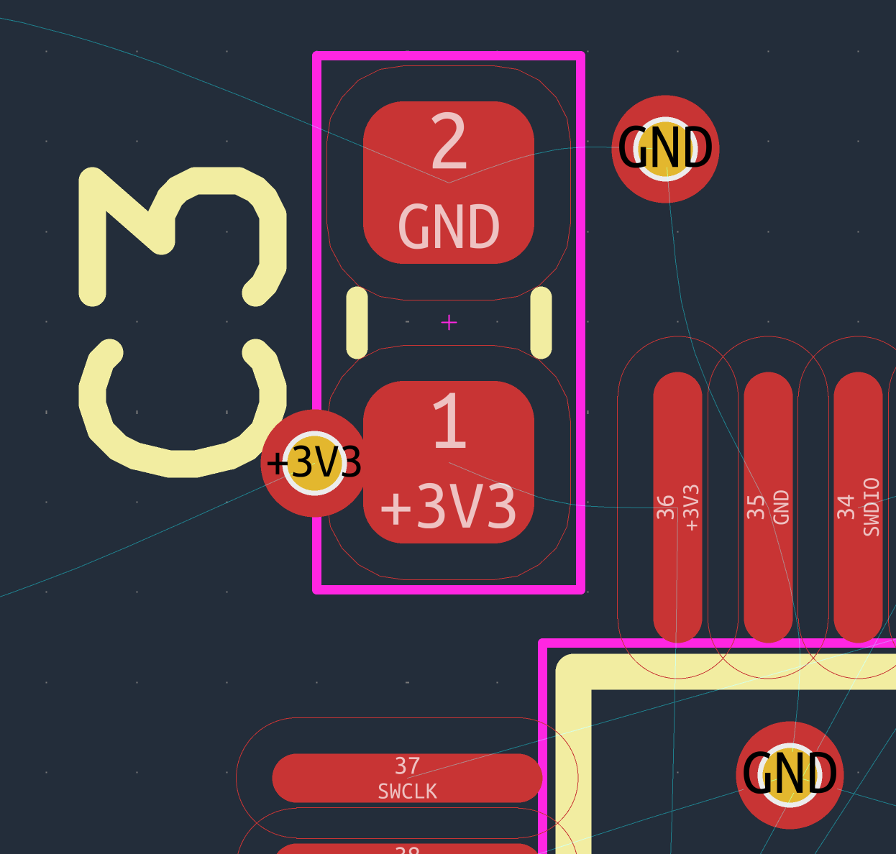
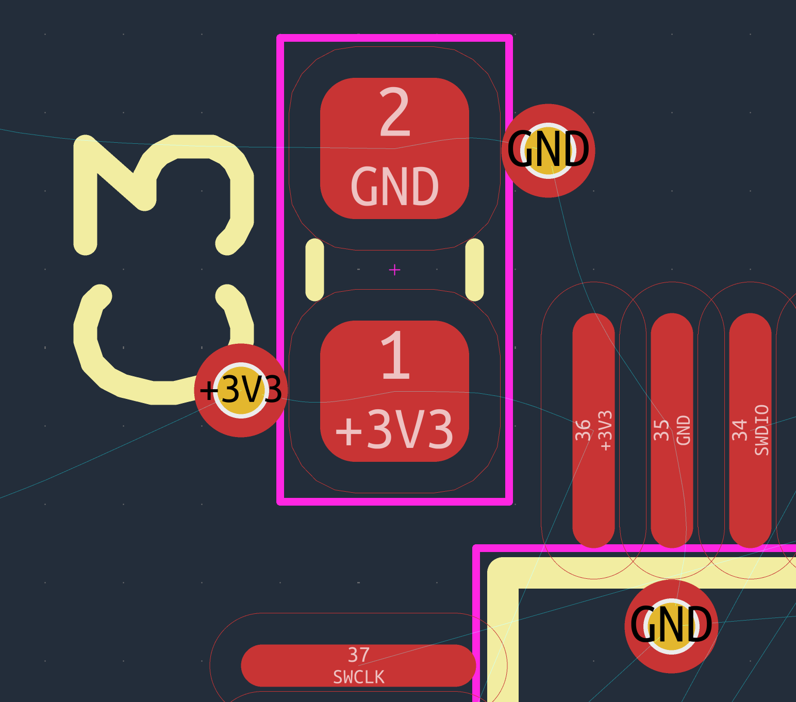
Keep every part's courtyard clear of the others. Courtyards shouldn't intersect.
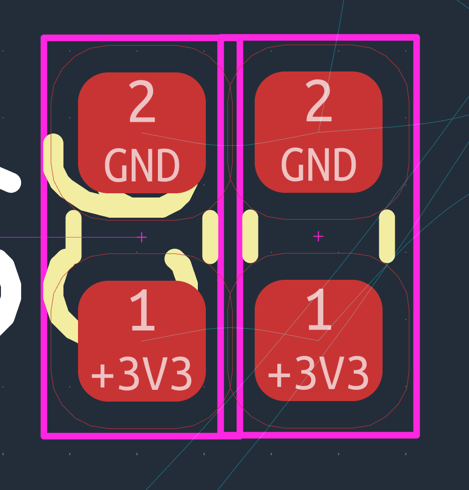
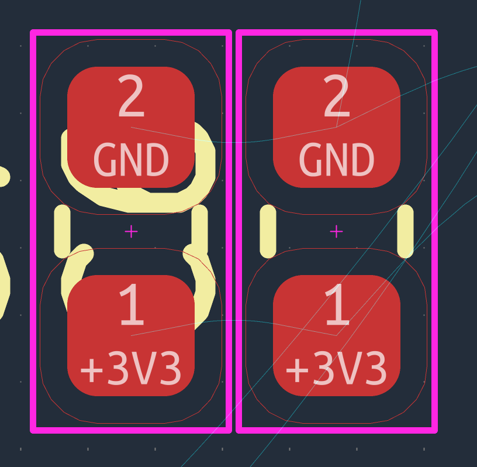
Place each reference and label right beside the component it refers to, so it's obvious what it belongs to. Silkscreen must not touch pads or other silkscreen: keep at least 0.2 mm clearance from both.
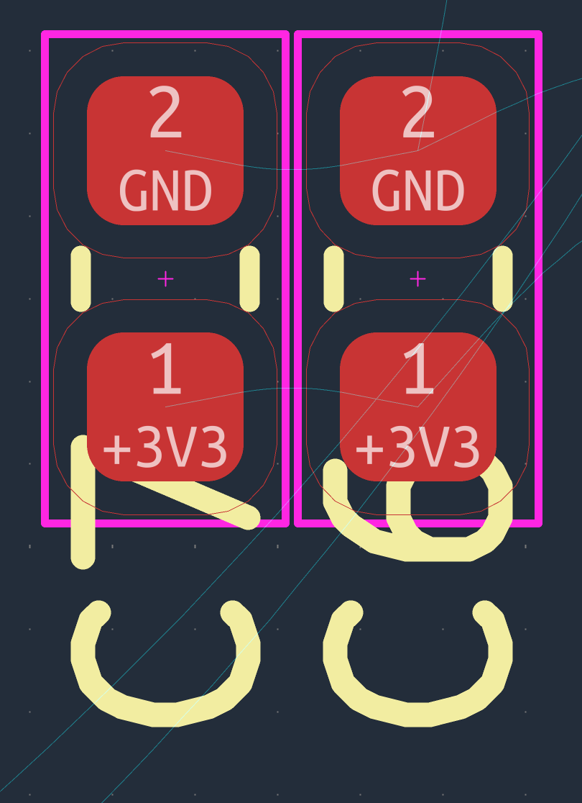
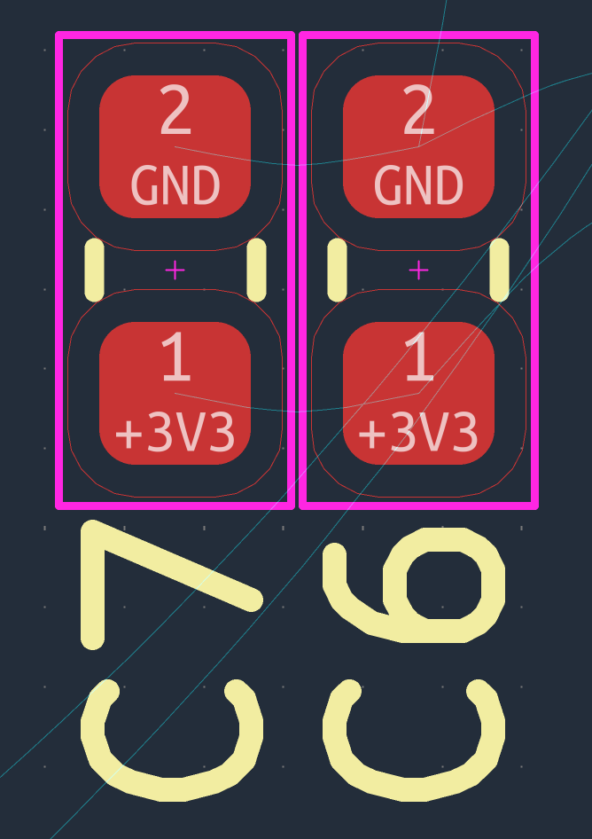
For the 5V and 3V3 LEDs, add a text object on the F.Silkscreen layer next to each LED saying which rail it shows, and place that rail's test point right beside it so it's obvious what each one refers to. The GND test point can go anywhere on the board, with a GND silkscreen marking next to it. For the reset and boot buttons, add RESET and BOOT text elements next to them.
Reference labels such as LED1, SW1 and TP1 can be hidden, since these markings already say what each part is. Double-click the part (for example LED1) and untick the Show checkbox for its reference.
Open View → 3D Viewer regularly. It shows how the board will actually look, so you can judge whether you like it and whether parts look evenly spaced.
If a part from the fsae library shows only its pads and silkscreen, KiCad can't find its 3D model. Library footprints find their models through ${FSAE_LIB}/fsae.3dshapes/, so first check that FSAE_LIB is set (step 04 of the setup) and that your fsae-kicad-lib clone is up to date with git pull. Then run Tools → Update Footprints from Library in the PCB editor so the parts on your board pick up the current paths.
Where parts sit in a row or column, line them up: select them, right-click → Align/Distribute → Align to Horizontal Center or Align to Vertical Center.
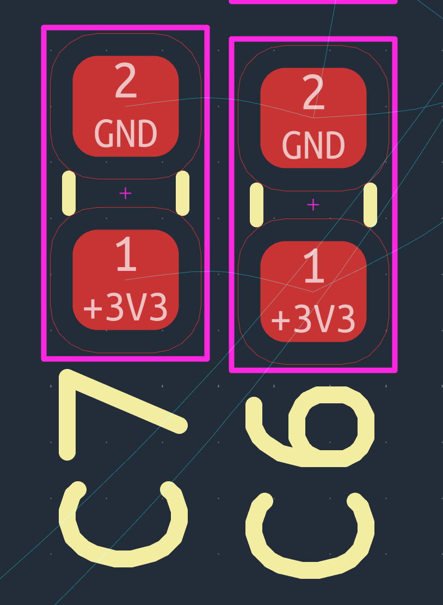
For more examples, look at how our team’s boards are laid out (GitHub, team access required):
Set four copper layers: F.Cu signals, In1.Cu GND, In2.Cu power, B.Cu signals. All parts go on the top layer.
Group each block’s parts into a tight island. Decoupling caps go right at their supply pins with short GND vias. Add vias as you go: 0.6/0.3 mm and 0.5/0.25 mm only, and 0.8/0.4 mm on high-current lines such as the LDO input/output where there's space. Clean up the silkscreen of each island as you finish it (see Keep silkscreen clean and Label LEDs, test points and buttons) instead of leaving it for the end. Label every connector, and look at Dev-Test-PCB for reference on how the screw terminals are labeled.
In the PCB editor, click Footprint Library Browser in the top toolbar. Filter by library: fsae, then by footprint: logo. Add it to the board and put it where it looks good, clear of pads and vias. Then add a text item under or next to it that says NYU, in a font and size of your choice. Add the revision as text too, for example Dev-F0 Rev 1.0, and your name or initials somewhere on the board (front or back silkscreen, your call) to identify it as yours. Feel free to customize it with any additional graphic elements you want. You can nudge everything later as the layout takes shape.
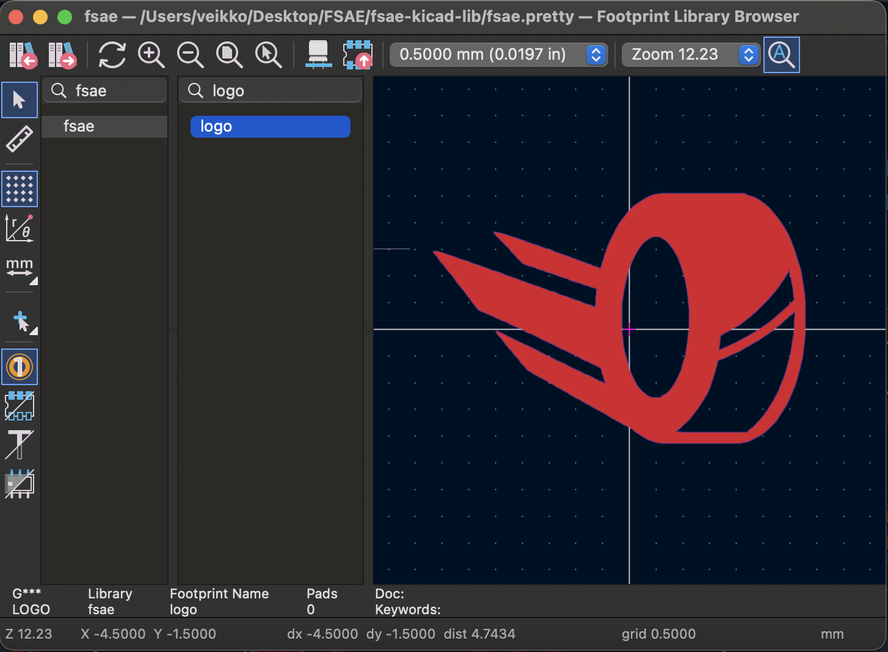
Rotate and place the islands so signals don’t cross the MCU, e.g. USB-C on the same side as the USB pins. I/O isn’t assigned yet, so place those terminals where traces would come out cleanly: ADC is available on pins 10–19, timer channels are on almost every side of the chip. SPI has three possible combinations of pins to use. Keep islands on the same power net, such as VBUS or 3V3, somewhat near each other, since that makes drawing the internal layer VBUS and 3V3 zones easier.
As the islands come together you’ll see how much space you need and what looks good in both 2D and 3D view, with enough space for vias, silkscreen, and traces to be added. Round the corners if you want. Reread 2.5.1 Requirements before you settle on a size.
Keep USB-C and the screw terminals on different edges. The terminals can go on any of the other edges and don’t all need to share one. Think about how you’ll use the board: plugged into your laptop on a table, wired to a sensor, a BMS or another PCB.
Open Table 13 in the STM32F042 datasheet. For each signal below, pick a pin on the side of the MCU facing its island:
Where you can, leave an unused pin between ADC and timer signals and keep their traces apart, to avoid coupling. Then update the net labels in the schematic to match and run Update PCB from Schematic.
Everything is still easy to adjust. Visualize where the traces will run and look at the 3D view, then move islands and silkscreen markings, and adjust the outline too if needed. Placement will still be fine-tuned and iterated during routing, so don't spend too much time here.
Before requesting review, check:
Good routing starts with component placement. Solve easy short connections inside each block, then rearrange islands to fine-tune placement as you get a better idea of how much space traces will take.
Watch these three before routing. They cover ground planes, stitching vias, differential pairs and trace widths.
F.Cu / GND / PWR / B.Cu · top and bottom for signals. No traces on the GND plane, and you shouldn't need traces on the PWR plane either.
Make the trace as wide as the pad it connects to. If a trace connects pads of different widths, use the width of the thinner one. (At the signal speeds we work with, wider traces are better, which is why they match the pad width. With very high speed routing such as USB 3.0, memory or display interfaces that you might work on someday, this rule no longer applies.)
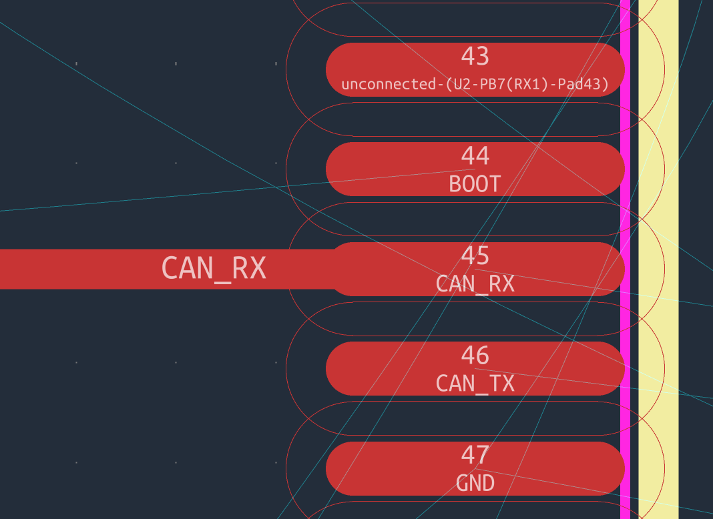
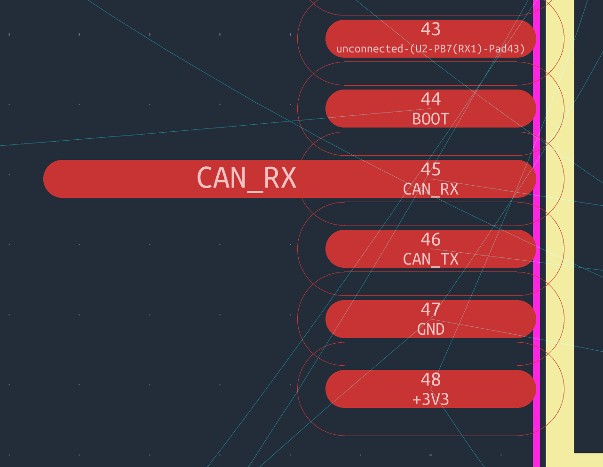
≥0.20 mm preferred; 0.15 mm absolute minimum. Keep adjacent tracks aesthetically evenly spaced.
0.50/0.25 and 0.60/0.30 for general routing; 0.80/0.40+ for heavy-current transitions with multiple vias, such as regulator input and output to/from the PWR plane.
No GND traces. Place a GND via next to each GND pad and leave the pad unconnected. We’ll add a copper pour at the end that connects the vias to the pads.
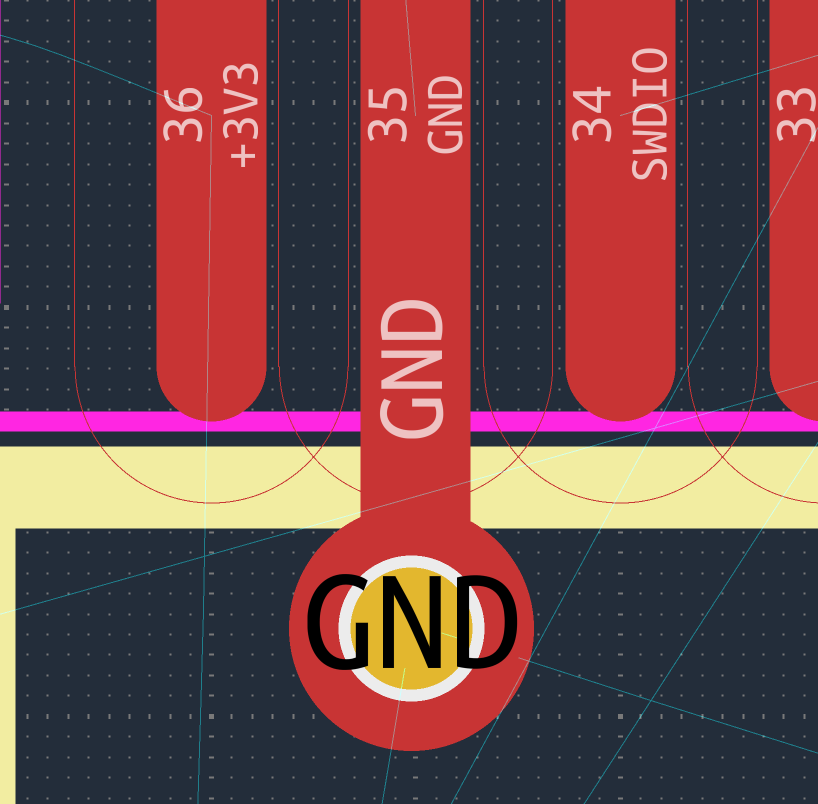
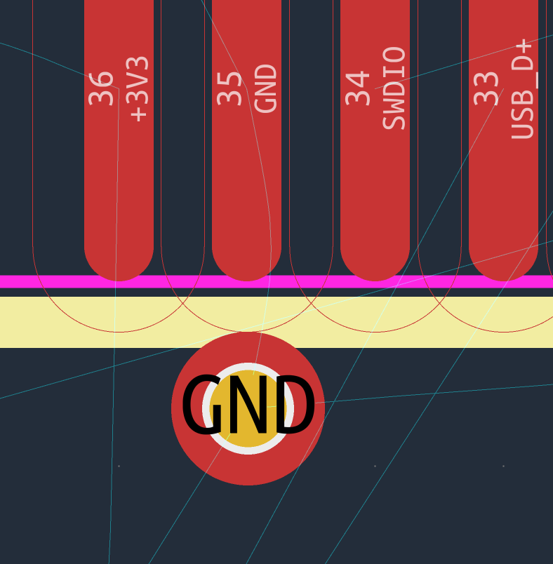
Power traces are the same width as the vias. Don’t neck a power trace down to a thin stub when it connects to a via.
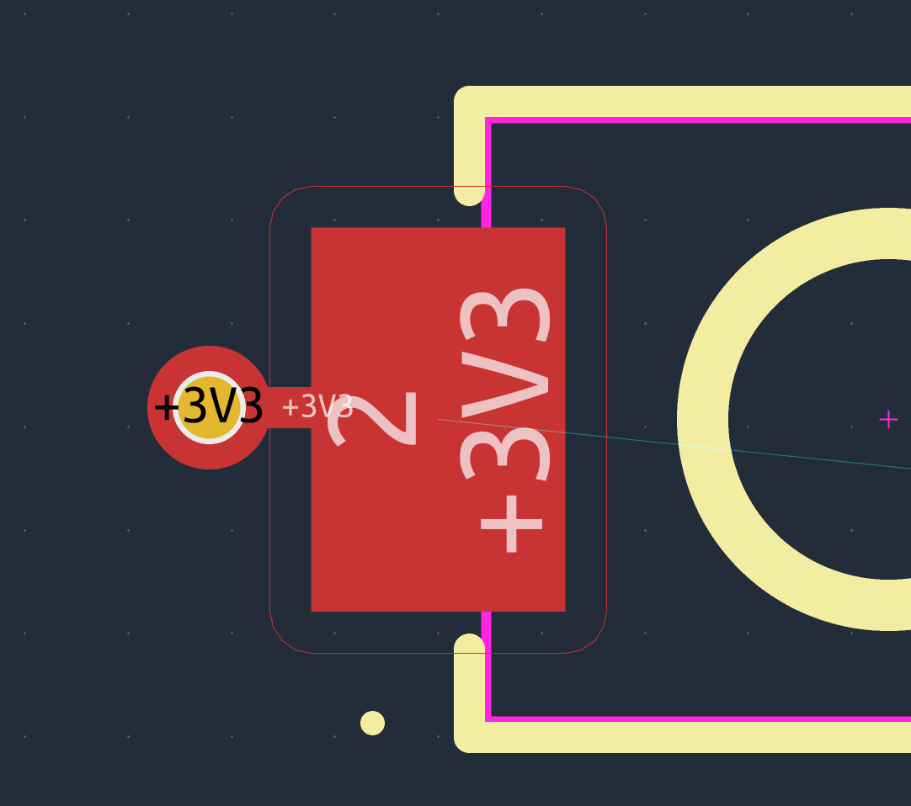
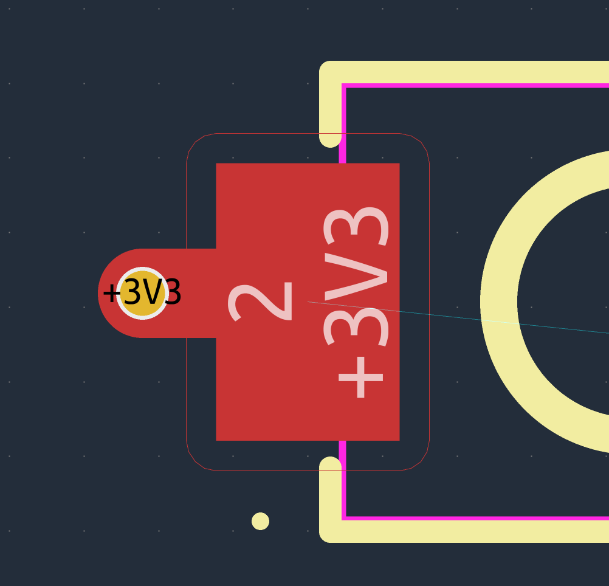
No power traces between islands. The voltage regulator input and output are filled copper zones on the top layer, connected to the internal power plane with multiple vias. Input capacitors for other components get their power from the internal plane in the same way, not from a trace running from the LDO.
Finish each island internally: resistor-to-cap, via-to-bypass-to-pin, LED-to-resistor, transceiver power, etc. For regulator input and output, use copper pours on the top layer instead of traces, with solid fill rather than thermal reliefs. Don't link all the major functional blocks yet.
Move entire blocks to shrink wasted space, untangle airwires and balance density. Re-check courtyard/assembly clearances and 3D View.
Route USB carefully, then CAN, MCU I/O, SPI and power. USB and CAN H/L lines are differential pairs, so route each pair together and keep the two lines 0.2 mm apart from one another. Prefer short paths, a continuous GND reference and consistent spacing. Avoid 90° corners. If a GPIO can be reassigned and doing so makes the routing more even or aesthetic, swap the pins, then update the net labels in the schematic and run Update PCB from Schematic.
Teardrops widen a trace where it meets a pad or via. This strengthens the connection, so the trace is less likely to crack or break away if the board flexes or a drill is slightly off-center, and it looks cleaner too. Open Board Setup → Design Rules → Teardrops and tick the Curved edges checkbox for each type of teardrop. Then, in the top menu bar (on Mac), choose Edit → Edit Teardrops, click Apply and close the dialog. Your traces should now have teardrops.
On In2.Cu, draw a copper pour for each power rail, covering the area where that rail's pins are. Connect every power pad down to its pour with a via. In the zone properties choose solid fill instead of thermal reliefs. Refill zones and check that no rail is split into islands.
Fill zones on F.Cu and B.Cu with GND; In1 is continuous GND and In2 the deliberate power plane. Refill all zones and inspect connectivity. Add perimeter/open-area stitching vias at about 4 mm intervals, 0.6/0.3 mm GND vias, respecting drill and edge clearances.
Run DRC. The padstack questionable, courtyard incomplete and annular width errors/warnings are fine: they come from minor design errors in the library footprints and are inconsequential. Watch out for unconnected nets, vias connected on only one layer, and clearance errors, and fix those.
Before requesting review, check:
All silkscreen was added during placement, so this is only a check. Open View → 3D Viewer and confirm that everything (NYU, the revision, connector labels, your initials) is there, readable, and follows the silkscreen rules. Don't let silkscreen overlap solder-mask openings.
ERC then DRC, update board from schematic, verify no unconnected copper, clearances, trace/via sizes, Edge.Cuts and exposed pads. Footprint review: pin 1, polarity, connector mounting and screw-terminal orientation. Inspect power rail continuity; DRC is not a substitute for the datasheet.
Watch the manual export video to learn what Gerbers, Excellon drills, BOM and position files are. In team projects we use generate-fab.sh to automate this; copy the script from a compatible board repo into your practice project and execute it.
# from ~/Desktop/FSAE/FirstLast-Dev-PCB
find .. -name generate-fab.sh
cp ../Proteus-PCB/generate-fab.sh ./generate-fab.sh
chmod +x generate-fab.sh
./generate-fab.sh
# Windows Git Bash: bash ./generate-fab.sh if neededGo to JLCPCB, upload the generated Gerber ZIP, choose 4 layers and inspect both front and back in the Gerber viewer. Verify size, holes, mask, silkscreen and orientation. Regenerate fab outputs as needed. Send the reviewed ZIP and repo link to Veikko for the team order after the January 23 team review.
A team review before ordering is standard industry practice: a fresh set of eyes catches mistakes before they are built into a board. Here, it also shows everyone how many different layout approaches are possible when placement isn't defined by an enclosure or other mechanical requirements. Since the circuits and BOM were predefined, there is no need to prepare beyond briefly explaining your reasoning behind your board size and placement decisions.
Before the team review, check:
The first video covers surface-mount parts, which go on first. The second covers through-hole parts, which go on last.
Soldering irons and hot air can burn you and damage equipment. Use fume extraction, eye protection and ESD-safe handling, and never solder an energized board.
Compare every part with the schematic and the parts checklist before it goes on the board, especially resistor and capacitor values, since many of them look alike.
Symmetrical ICs can go on the board in the wrong orientation, so pin 1 is marked on the PCB with a silkscreen marking, like the dot next to pin 1 in the footprint below. On the package, pin 1 is usually marked with another dot, but it's good to check the datasheet. Line the two up before you solder.
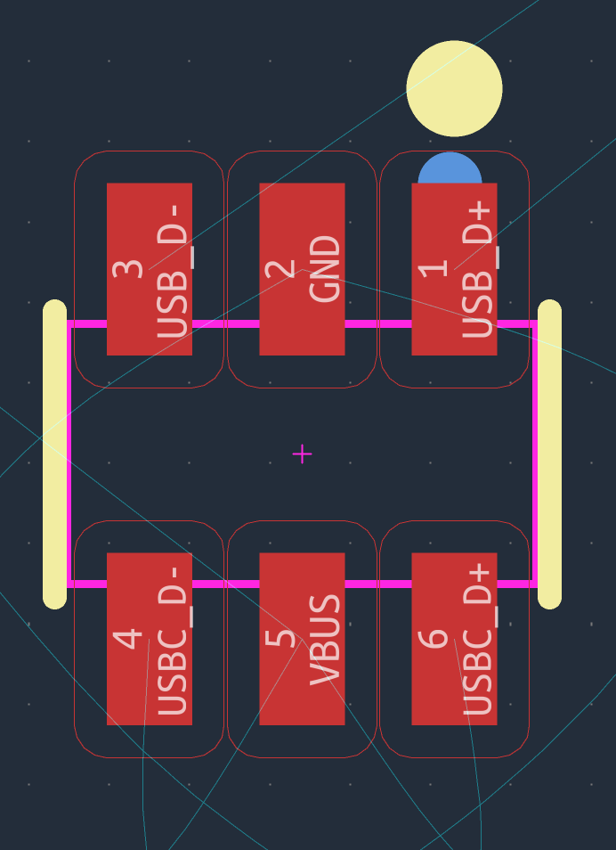
Resistors and ceramic capacitors are unpolarized, so they work either way round. Diodes, LEDs, electrolytic caps and ICs are polarized and must go on the right way round. Check the marking on the part against the silkscreen and the datasheet before you solder.
ESD mat and strap as available, good ventilation/fume extraction, solder paste, hot air station, temperature-controlled iron, fine solder, flux, tweezers, magnification, wick, multimeter. Learn pad/pin orientation, solder-mask and flux behavior. Start with practice 0603s if needed. Since the minimum order quantity (MOQ) for PCBs is five and we have plenty of excess SMD components, you can practice as much as you want first.
We'll likely use solder paste and a hot air station. The makerspace also has a reflow oven, so we may use that method instead in the spring if it's accessible to us. Start with the low parts: 0603/0805 passives and SOT-23/SOT-223, then SOIC-8 and LQFP-48, and wick away any bridges. USB-C inner contacts may need extra heat or mentor help.
Once every SMD part is on, solder the through-hole parts, such as the screw terminals and headers, with the iron. Doing them last keeps their bulk out of the way while you work on the small parts.
Look for bridges, cold joints, tombstoned passives, rotated ICs, wrong pin 1. Confirm GND ↔ 5 V and GND ↔ 3.3 V are not shorted before power. Check LDO input/output pinout and capacitor polarity if applicable.
Before moving on, check:
Instructions will be added in late January, when this becomes topical.